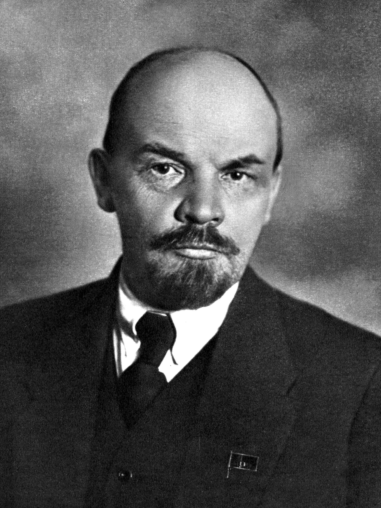

📚 بیوگرافی لنین به زبان فارسی
این صفحه اطلاعات جامعی درباره والدیمیر ایلیچ اولیانوف معروف به لنین (۱۸۷۰-۱۹۲۴) ارائه میدهد. لنین رهبر انقلاب بلشویکی و بنیانگذار اتحاد جماهیر شوروی سوسیالیستی بود که نظریه مارکسیسم-لنینیسم را پایهریزی کرد. این مطالب بر اساس منابع تاریخی معتبر و اسناد تاریخی تهیه شدهاند.

نام کامل: والدیمیر ایلیچ اولیانوف
تولد: ۲۲ آوریل ۱۸۷۰
وفات: ۲۱ ژانویه ۱۹۲۴
ملیت: روسی
شغل: انقلابی، سیاستمدار، نظریهپرداز
مشهور به: رهبر انقلاب بلشویکی
همسر: نادژدا کروپسکایا
👶 زندگی اولیه و تشکیل شخصیت انقلابی
والدیمیر ایلیچ اولیانوف در ۲۲ آوریل ۱۸۷۰ در شهر سیمبیرسک (امروزه اولیانوفسک) در خانوادهای متوسط و تحصیلکرده به دنیا آمد. پدرش ایلیا نیکولایویچ اولیانوف مفتش مدارس منطقه و مادرش ماریا الکساندرونا بلانک از خانوادهای روشنفکر بود. این محیط خانوادگی مملو از ارزشهای تحصیل، عدالت و انتقاد از نظام استبدادی تزاری، نقش تعیینکنندهای در شکلگیری شخصیت انقلابی لنین ایفا کرد.
رویداد تعیینکننده زندگی لنین اعدام برادر بزرگترش الکساندر در سال ۱۸۸۷ به دلیل شرکت در توطئه ترور علیه تزار الکساندر سوم بود. این واقعه تلخ نه تنها خانواده اولیانوف را درگیر غم و اندوه کرد، بلکه باعث بیداری سیاسی عمیق در لنین جوان شد. او از این تجربه دردناک درس گرفت که مبارزه انفرادی و ترور علیه خودکامگی تزاری کافی نیست، بلکه نیاز به سازماندهی تودهای و انقلاب سازمانیافته است.
🏗️ رهبری انقلاب بلشویکی ۱۹۱۷
سال ۱۹۱۷ نقطه اوج زندگی سیاسی لنین محسوب میشود. پس از سقوط تزار نیکلای دوم در انقلاب فوریه، لنین که در تبعید به سر میبرد، با شعار مشهور «نان، صلح، زمین» و تزهای آوریل خود، راه انقلاب پرولتری را ترسیم کرد. وی معتقد بود که دولت موقت بورژوایی نمیتواند مشکلات اساسی روسیه را حل کند و تنها قدرت کامل در دست طبقه کارگر میتواند انقلاب واقعی را محقق سازد.
«بدون نظریه انقلابی، جنبش انقلابی امکانپذیر نیست.» — لنین
🏛️ تأسیس و سازماندهی دولت شوروی
پس از پیروزی انقلاب اکتبر، لنین با چالش عظیم تبدیل نظریات انقلابی به واقعیت حکومتی مواجه شد. او نخستین وزیر شوروی (رئیس شورای کمیسرهای خلق) شد و شروع به بنای اولین دولت سوسیالیستی جهان کرد. این دوره با تصویب فرامین انقلابی نظیر ملی کردن زمین، کارخانجات، و بانکها همراه بود.
لنین معتقد بود که برای موفقیت انقلاب سوسیالیستی، باید تمام ساختارهای قدیمی نابود شوند و نظم جدیدی بر اساس مالکیت جمعی و عدالت اجتماعی بنا گردد. او سیاستهایی را اجرا کرد که هدفشان کاهش نابرابری طبقاتی و ایجاد جامعهای بدون استثمار بود.
📖 توسعه نظریه مارکسیسم-لنینیسم
یکی از مهمترین دستاوردهای فکری لنین، توسعه و تطبیق نظریات مارکس با شرایط خاص روسیه قرن بیستم بود. او ثابت کرد که انقلاب سوسیالیستی نه تنها در کشورهای صنعتی پیشرفته، بلکه در کشورهای عقبمانده نیز امکانپذیر است. نظریه «حلقه ضعیف امپریالیسم» لنین، راه را برای انقلابهای آینده در کشورهای در حال توسعه هموار کرد.
لنین بر اهمیت تشکیل حزبی منضبط و آگاه تأکید داشت که بتواند طبقه کارگر را رهبری کند. او معتقد بود که بدون چنین سازمانی، انقلاب موفق نخواهد بود. این ایده بعدها به یکی از اصول بنیادین کمونیسم تبدیل شد.
🌟 میراث و تأثیرات جهانی لنین
تأثیر لنین بر تاریخ جهان فراتر از مرزهای اتحاد شوروی و عصر او گسترش یافت. ایدهها و روشهای او الهامبخش انقلابهایی در چین، کوبا، ویتنام و دهها کشور دیگر شد. مفهوم انقلاب پرولتری، سازماندهی حزبی منضبط، و مبارزه ضد امپریالیستی از جمله مؤلفههای اصلی میراث او محسوب میشوند.
امروزه، نام لنین همچنان با انقلاب، تغییر اجتماعی و مبارزه برای عدالت گره خورده است. اگرچه بر سر ارزیابی میراث او اختلاف نظر وجود دارد، اما تأثیر او بر شکلگیری جهان مدرن غیرقابل انکار است. آثار او همچنان مطالعه میشوند و ایدههایش در جنبشهای اجتماعی مختلف بازتاب مییابد.
📚 چه درسهایی میتوانیم از لنین بیاموزیم؟
در عصری که جهان با نابرابریهای اقتصادی، بحرانهای زیستمحیطی و بیثباتی سیاسی روبهروست، زندگی و میراث لنین همچنان درسهای ارزشمندی درباره ماهیت قدرت، اخلاق انقلاب و امکان تغییر بنیادین ارائه میدهد. تعهد راسخ او برای دگرگونی جامعه، قدرت ایدههای رادیکال و اهمیت به چالش کشیدن مداوم وضع موجود را نشان میدهد.
برای فعالان و متفکران امروزی، میراث لنین فراخوانی است برای کشف راههای نوآورانهای به سوی عدالت اجتماعی، با در نظر گیری پیچیدگیهای واقعی حکمرانی جوامع بزرگ. با مطالعه موفقیتها و شکستهای لنین، نسلهای آینده میتوانند درسهای مهمی درباره توازن میان شور انقلابی و حکمرانی عملی بیاموزند.
📚 آثار و نوشتههای مهم لنین
لنین نه تنها یک رهبر انقلابی، بلکه نویسندهای پرکار بود که آثارش در ۵۵ جلد در زبان روسی جمعآوری شده است. نوشتههای او از رسالههای فلسفی گرفته تا راهنماهای عملی سازماندهی انقلابی را شامل میشود. درک آثار اصلی او بینشی ارزشمند درباره پایههای فکری نخستین دولت کمونیستی جهان ارائه میدهد.
📖 «باید چه کرد؟» (۱۹۰۲)
شاید تأثیرگذارترین اثر نظری لنین، «باید چه کرد؟» اصول سازمانی را تعین کرد که احزاب کمونیست سراسر جهان را تعریف کرد. این کتاب در طول تبعید اروپایی او نوشته شد و استدلال میکرد که آگاهی انقلابی نمیتواند بهطور خودجوش در میان کارگران توسعه یابد، بلکه باید توسط حزبی منضبط از انقلابیون حرفهای به آنها منتقل شود.
عنوان این اثر که از رمانی نوشته رادیکال روسی نیکلای چرنیشفسکی گرفته شده بود، سؤال بنیادی استراتژی انقلابی را مطرح میکرد. پاسخ لنین - ایجاد سازمانی متمرکز و توطئهگرانه - با رویکردهای دموکراتیکتر مورد علاقه سوسیالیستهای اروپایی در تضاد بود اما برای موفقیت بلشویکها در شرایط خودکامگی تزاری حیاتی ثابت شد.
🌍 «امپریالیسم: عالیترین مرحله سرمایهداری» (۱۹۱۶)
این اثر که در طول جنگ جهانی اول نوشته شد، تحلیل لنین از چگونگی تطور سرمایهداری به سیستمی جهانی را ارائه میدهد که توسط سرمایه مالی تسلط یافته و با رقابت بینالمللی برای بازارها، منابع و مناطق نفوذ مشخص میشود. لنین استدلال کرد که امپریالیسم مرحله نهایی سرمایهداری را نشان میدهد که با تضادهای فزایندهای مشخص است که ناگزیر به بحران و انقلاب منجر خواهد شد.
اهمیت این اثر فراتر از بافت فوری آن بود. این اثر توجیه نظری انقلاب در کشورهای کم توسعهتر را فراهم کرد و جنبشهای ضد استعماری در طول قرن بیستم را تحت تأثیر قرار داد. رهبرانی مانند هو شی مین، فیدل کاسترو و نلسون ماندلا بعدها تحلیل لنین از امپریالیسم را بهعنوان عنصری حیاتی در استراتژیهای انقلابی خود ذکر کردند.
⚖️ «دولت و انقلاب» (۱۹۱۷)
این اثر که در ماههای قبل از انقلاب اکتبر و در حالی که لنین در فنلاند مخفی شده بود نوشته شد، چشمانداز او از دولت پرولتری و گذار به کمونیسم را ترسیم میکرد. این کتاب تلاش میکرد آرمانهای دموکراتیک مارکس را با ضروریات عملی حکمرانی انقلابی آشتی دهد.
لنین استدلال کرد که دستگاه دولت بورژوایی نمیتواند صرفاً تصرف شود بلکه باید «در هم شکسته» شود و با نهادهای جدیدی بر اساس مشارکت مستقیم کارگران جایگزین گردد. او دولتی را بر مدل کمون پاریس متصور میکرد، جایی که مقامات انتخاب میشدند، قابل عزل بودند و بیش از کارگران عادی حقوق نمیگرفتند. تضاد بین این چشمانداز دموکراتیک و واقعیت اقتدارگرای توسعه شوروی منبع بحث مداوم در میان مارکسیستها شد.
💰 «توسعه سرمایهداری در روسیه» (۱۸۹۹)
اولین اثر بزرگ نظری لنین که در طول تبعید سیبری نوشته شد، تحلیل جامعی از توسعه اقتصادی روسیه ارائه میداد که ادعاهای پوپولیستها درباره مسیر منحصربهفرد این کشور را به چالش میکشید. لنین با استفاده از دادههای آماری گسترده نشان داد که روابط سرمایهدارانه در حال توسعه در کشاورزی و صنعت روسیه است.
این اثر شهرت لنین را بهعنوان یک نظریهپرداز جدی مارکسیست پایهگذاری کرد و بنیان استراتژی سیاسی بعدی او را فراهم آورد. با اثبات اینکه سرمایهداری در روسیه توسعه مییابد، لنین استدلال کرد که طبقه کارگر این کشور پتانسیل انقلابی دارد و انقلاب سوسیالیستی از لحاظ تاریخی امکانپذیر است، حتی در جامعهای که عمدتاً کشاورزی است.
👑 سبک رهبری و روشهای انقلابی لنین
رویکرد لنین به رهبری ترکیبی از پیچیدگی نظری با بیرحمی عملی، آرمانهای دموکراتیک با روشهای اقتدارگرایانه، و چشمانداز بینالمللی با میهندوستی روسی بود. درک سبک رهبری او کمک میکند تا هم موفقیت بلشویکها و هم تضادهایی را که سیستم شوروی را رنج میداد، توضیح دهیم.
🎯 تصمیمگیری متمرکز
لنین معتقد بود که رهبری مؤثر انقلابی مستلزم تصمیمگیری متمرکز و انضباط حزبی سخت است. برخلاف رهبران سوسیال دموکرات که به دنبال اجماع از طریق بحث و مصالحه بودند، لنین بر اقتدار سلسلهمراتبی واضح و اجرای فوری تصمیمات تأکید داشت. این رویکرد در طول بحرانهای انقلابی که اقدام سریع ضروری بود، حیاتی ثابت شد.
با این حال، روشهای متمرکز لنین مشکلاتی نیز برای دموکراسی سوسیالیستی ایجاد کرد. اعضای حزب که با موضعگیریهای رسمی مخالف بودند با اخراج روبهرو میشدند و دیدگاههای جایگزین اغلب سرکوب میشدند تا مورد بحث قرار گیرند. این الگو که در دوره زیرزمینی تأسیس شد، پس از انقلاب ادامه یافت و به ظهور دیکتاتوری تکحزبی کمک کرد.
🔄 انعطافپذیری استراتژیک
یکی از بزرگترین نقاط قوت لنین بهعنوان رهبر، انعطافپذیری تاکتیکی همراه با ثبات استراتژیک بود. او حاضر بود تاکتیکهایش را بهطور چشمگیری تغییر دهد - متحد شدن با دهقانان، استخدام افسران تزاری، اجرای مکانیزمهای بازار تحت NEP - در حالی که هدف نهاییاش یعنی تحول سوسیالیستی را حفظ میکرد.
این انعطافپذیری گاهی پیروانش را گیج یا ناامید میکرد که انتظار ثبات ایدئولوژیک بیشتری داشتند. جمله مشهور لنین «یک قدم عقب، دو قدم جلو» منعکسکننده درک او از اینکه پیشرفت انقلابی مستلزم عقبنشینیهای موقت و مصالحههای تاکتیکی است. این رویکرد او را از مارکسیستهای عقیدهگراتری متمایز کرد که از تطبیق نظریه با شرایط متغیر امتناع میورزیدند.
📣 ارتباط جمعی و تبلیغات
لنین اهمیت حیاتی ارتباطات در سیاست انقلابی را درک میکرد. روزنامهها، جزوهها و سخنرانیهایش بهدقت طراحی شده بودند تا به مخاطبان مختلف - کارگران، دهقانان، سربازان، روشنفکران - برسند و پیامهایی که بر نگرانیها و منافع خاص آنها متمرکز بود، ارائه دهند. موفقیت بلشویکها در سال ۱۹۱۷ بیشتر مدیون تبلیغات و تحریکات برتر بود.
رویکرد لنین به تبلیغات، اپیلهای عاطفی را با استدلالهای منطقی، شعارهای ساده را با تحلیل نظری پیچیده ترکیب میکرد. او اصرار داشت که ایدههای انقلابی باید به زبانی ارائه شوند که مردم عادی بتوانند آن را درک کنند در حالی که پیچیدگی نظری را برای مخاطبان تحصیلکرده حفظ کند. این رویکرد دوگانه به ویژگی مشخصه استراتژیهای ارتباطی کمونیستی تبدیل شد.
⚔️ استفاده از خشونت و ترور
نگرش لنین به خشونت انقلابی پیچیده بود و در طول زمان تکامل یافت. در ابتدا تحت تأثیر اعدام برادرش، او تروریسم فردی را به نفع اقدام انقلابی جمعی رد کرد. با این حال، ضروریات عملی انقلاب و جنگ داخلی او را به تأیید استفاده گسترده از خشونت دولتی علیه مخالفان سوق داد.
ایجاد چکا (پلیس مخفی) و اجرای «ترور سرخ» منعکسکننده اعتقاد لنین بود که خشونت انقلابی برای دفاع از دستاوردهای سوسیالیستی در برابر تهدیدات ضد انقلابی ضروری است. او استدلال میکرد که خشونت انقلاب از لحاظ تاریخی مترقی است در مقایسه با خشونت سیستماتیک استثمار سرمایهدارانه، اگرچه این موضع حتی در میان سوسیالیستها نیز بحثبرانگیز باقی ماند.
💼 سیاستهای اقتصادی و بنای سوسیالیستی
رویکرد لنین به سیاست اقتصادی از خوشبینی انقلابی ۱۹۱۷ تا اصلاحات عملی NEP بهطور چشمگیری تکامل یافت. تجربیات او در تلاش برای بنای سوسیالیسم در کشوری عقبمانده و درگیر جنگ درسهای ارزشمندی درباره چالشهای تحول اقتصادی فراهم آورد.
🏭 کمونیسم جنگی (۱۹۱۸-۱۹۲۱)
کمونیسم جنگی اولین تلاش لنین برای اجرای اصول اقتصادی سوسیالیستی تحت شرایط فوقالعاده جنگ داخلی و مداخله خارجی بود. این سیاست شامل ملیسازی صنایع بزرگ، انحصار دولتی تجارت غلات، ممنوعیت تجارت خصوصی و نظامیسازی نیروی کار بود.
اگرچه کمونیسم جنگی به بلشویکها کمک کرد تا با حداکثرسازی بسیج منابع از جنگ داخلی جان سالم به در ببرند، اما از نظر اقتصادی فاجعهآمیز ثابت شد. تولید صنعتی سقوط کرد، تولید کشاورزی بهطور چشمگیری کاهش یافت و بازارهای سیاه علیرغم مجازاتهای سخت رونق گرفت. شکست این سیاست لنین را مجبور کرد تا فرضیات بنیادی درباره سازماندهی اقتصادی سوسیالیستی را بازنگری کند.
🔄 سیاست اقتصادی نو (۱۹۲۱-۱۹۲۸)
NEP مهمترین مصالحه ایدئولوژیک لنین بود که اجازه تجارت خصوصی، تولید در مقیاس کوچک و سرمایهگذاری خارجی را میداد در حالی که کنترل دولتی بر «بلندیهای فرماندهی» مانند صنایع سنگین، بانکداری و تجارت خارجی را حفظ میکرد. لنین NEP را بهعنوان عقبنشینی استراتژیک توصیف کرد که امکان تحکیم قدرت سوسیالیستی را در حین بازسازی اقتصاد فراهم میآورد.
موفقیت NEP در احیای رشد اقتصادی شوروی، رویکرد عملی لنین را تأیید کرد اما تضادهای جدیدی ایجاد کرد. ظهور بازرگانان خصوصی مرفه (NEPmen) و دهقانان ثروتمند (کولاکها) به نظر با اصول سوسیالیستی برابری در تضاد بود. مرگ لنین در سال ۱۹۲۴ این تضادها را حلنشده باقی گذاشت و به درگیریهای بعدی بر سر سیاست اقتصادی کمک کرد.
🌾 سیاست کشاورزی و روابط دهقانی
سیاست کشاورزی لنین منعکسکننده چالش پیچیده بنای سوسیالیسم در کشوری با اکثریت دهقان بود. حمایت او از تصرف زمین توسط دهقانان در طول انقلاب با ترجیح مارکسیستی ارتدکس برای کشاورزی جمعی مقیاس بزرگ در تضاد بود اما برای حفظ حمایت روستایی ضروری بود.
تحت NEP، لنین سیاست محتاطانهای در قبال تشویق تولید کشاورزی از طریق مشوقهای بازار در حالی که بهتدریج اشکال تعاونی سازماندهی را ترویج میداد، دنبال کرد. او استدلال میکرد که اجبار جمعیسازی دهقانان را بیگانه میکند و قدرت بلشویک را تهدید میکند، اگرچه او همچنان متعهد به اجتماعیسازی نهایی کشاورزی باقی ماند.
🏗️ استراتژی صنعتیسازی
لنین تشخیص داد که بنای موفق سوسیالیستی مستلزم صنعتیسازی سریع برای ایجاد پایه مادی جامعه سوسیالیستی پیشرفته است. با این حال، او همچنین درک میکرد که صنعتیسازی در کشور عقبمانده مستلزم برنامهریزی دقیق و همکاری بینالمللی است.
رویکرد او تأکید بر توسعه صنایع سنگین و فناوری مدرن را در حالی که کنترل کارگری و اصول سوسیالیستی را حفظ میکرد، شامل میشد. تنش بین صنعتیسازی سریع و مشارکت دموکراتیک به چالش مرکزی برای جانشینان او تبدیل شد که نهایتاً از طریق روشهای اقتدارگرایانه استالین حل شد که با چشمانداز دموکراتیکتر لنین در تضاد بود.
🎨 انقلاب فرهنگی و تحول اجتماعی
لنین درک میکرد که بنای سوسیالیسم نه تنها مستلزم تغییرات اقتصادی و سیاسی، بلکه تحول فرهنگی بنیادی نیز است. رویکرد او به سیاست فرهنگی آرمانگرایی انقلابی را با شناخت عملی شرایط موجود ترکیب میکرد و تنشهایی ایجاد کرد که در طول تاریخ شوروی ادامه یافت.
📚 آموزش و سوادآموزی
لنین آموزش را برای خلق «انسان سوسیالیست جدید» و امکان مشارکت واقعی کارگران در اداره جامعه حیاتی میدانست. همسرش نادژدا کروپسکایا، بهعنوان کمیسر خلق آموزش، اصلاحات جامعی را اجرا کرد که برای رفع بیسوادی و ایجاد نظام آموزشی جدید بر اساس اصول مارکسیستی طراحی شده بود.
کمپین سوادآموزی شوروی یکی از بزرگترین موفقیتهای رژیم اولیه بود که میزان سوادخوانی در میان کارگران و دهقانان را بهطور چشمگیری افزایش داد. لنین اصرار داشت که آموزش باید دانش نظری را با مهارتهای عملی ترکیب کند تا دانشآموزان را برای کار مولد آماده کند و تواناییهای تفکر انتقادی را پرورش دهد. این رویکرد بر سیاستهای آموزشی در کشورهای سوسیالیستی سراسر جهان تأثیر گذاشت.
👩💼 آزادسازی زنان
تعهد لنین به برابری زنان فراتر از حقوق قانونی رسمی، شامل تحول اجتماعی بنیادی بود. قانون اولیه شوروی به زنان حقوق برابر در ازدواج، طلاق، اشتغال و مشارکت سیاسی اعطا کرد - پیشرفتهایی که برای آن زمان انقلابی بود.
با این حال، لنین همچنین تشخیص داد که دستیابی به برابری واقعی مستلزم تغییر نگرشهای اجتماعی عمیقالریشه و ساختارهای اقتصادی است. او از تلاشها برای اجتماعیسازی کار خانگی از طریق آشپزخانههای جمعی، مراکز مراقبت کودک و رختشویخانهها حمایت کرد، اگرچه اجرای عملی این ایدهها با توجه به فقر و عقبماندگی کشور دشوار بود.
🎭 هنر، ادبیات و بیان فرهنگی
رویکرد لنین به فرهنگ حمایت از آزادی هنری را با شناخت اهمیت اجتماعی و سیاسی هنر ترکیب میکرد. او معتقد بود که فرهنگ سوسیالیستی باید در خدمت منافع کارگران و دهقانان باشد در حالی که استانداردهای هنری بالا را حفظ کند، موضعی که تنشهای مداوم بین معیارهای زیباییشناسی و سیاسی ایجاد کرد.
دوره اولیه شوروی شاهد آزمایشهای فرهنگی قابلتوجهی بود، با هنرمندان، نویسندگان و فیلمسازان آوانگارد که اشکال جدید بیان منعکسکننده ارزشهای انقلابی را کشف میکردند. لنین شخصاً از بسیاری از این آزمایشها حمایت کرد، اگرچه او همچنین اصرار داشت که آثار فرهنگی باید برای مردم عادی قابل دسترس باشند تا محدود به نخبگان روشنفکر نشوند.
⛪ دین و آتئیسم
لنین دین را «افیون مردم» میدانست که کارگران را از مبارزات مادی منحرف میکند و ساختارهای قدرت موجود را حمایت میکند. با این حال، رویکرد او به سیاست مذهبی پیچیدهتر از آنچه معمولاً تشخیص داده میشود بود و انعطافپذیری تاکتیکی را با مخالفت ایدئولوژیک ترکیب میکرد.
قانون اساسی اولیه شوروی آزادی وجدان را تضمین میکرد در حالی که آموزش آتئیستی را ترویج میداد. لنین با آزار و اذیت خشونتآمیز مؤمنان مخالف بود و استدلال میکرد که ایمان مذهبی بهطور طبیعی با آموزش سوسیالیستی و پیشرفت مادی ناپدید خواهد شد که شرایط اجتماعی ایجادکننده نیازهای مذهبی را از بین میبرد. این رویکرد آتئیسم شوروی را از سیاستهای ضد مذهبی تندتر برخی از رژیمهای کمونیستی بعدی متمایز کرد.
🔍 بحثهای تاریخی و تفسیرهای مدرن
اهمیت تاریخی لنین همچنان باعث بحث در میان مورخان، علوم سیاسی و فعالان سراسر جهان است. این بحثها نه تنها منعکسکننده اختلاف نظر درباره وقایع تاریخی، بلکه تفاوتهای بنیادی در ارزشهای سیاسی و چارچوبهای تفسیری است.
🤔 لنین دموکراتیک در برابر اقتدارگرا
یکی از بحثهای اصلی اینکه آیا اقتدارگرایی لنین نتیجه حتمی موضعگیریهای نظری او بود یا پاسخ تاکتیکی به شرایط فوقالعاده. برخی از محققان استدلال میکنند که مفهوم لنین از حزب پیشاهنگ ناگزیر به دیکتاتوری منجر شد، در حالی که دیگران ادعا میکنند که آرمانهای دموکراتیک محوری در چشمانداز او بود اما توسط جنگ داخلی و بحران اقتصادی به خطر افتاد.
این بحث پیامدهای عملی برای جنبشهای چپ معاصر دارد، بهویژه در خصوص رابطه بین رهبری انقلابی و مشارکت دموکراتیک. تفسیرهای مختلف از میراث لنین بر احزاب کمونیست، جنبشهای سوسیال دموکرات و مبارزات مختلف آزادیبخش در سراسر جهان تأثیر گذاشته است.
🌐 لنین و جنبشهای ضد استعماری
نظریه امپریالیسم لنین او را تأثیرگذار حیاتی بر جنبشهای ضد استعماری کرد، اگرچه او عمدتاً درباره شرایط اروپایی نوشت. رهبران جنبشهای استقلال در آسیا، آفریقا و آمریکای لاتین در تحلیل لنین چارچوبی برای درک مبارزات خود علیه تسلط امپریالیستی یافتند.
با این حال، کاربرد اصول لنینیستی در بافتهای ضد استعماری سؤالات پیچیدهای درباره رابطه بین آزادیبخشی ملی و انقلاب اجتماعی، نقش اکثریتهای دهقان در استراتژی انقلابی، و امکانات توسعه سوسیالیستی در کشورهای وابسته اقتصادی مطرح کرد.
📊 میراث اقتصادی و توسعه سوسیالیستی
اقتصاددانان همچنان درباره مشارکتهای لنین در نظریه و عمل اقتصادی سوسیالیستی بحث میکنند. آزمایشهای او با کمونیسم جنگی و NEP درسهای ارزشمندی درباره چالشهای برنامهریزی اقتصادی، مکانیزمهای بازار تحت سوسیالیسم، و رابطه بین قدرت سیاسی و سازماندهی اقتصادی فراهم آورد.
این بحثها اهمیت تجدیدشدهای دارند زیرا جوامع معاصر با سؤالات درباره نابرابری اقتصادی، پایداری زیستمحیطی و کنترل دموکراتیک بر تصمیمات اقتصادی دستوپنجه نرم میکنند. تجربیات لنین هم امکانات و هم محدودیتهای رویکردهای انقلابی به تحول اقتصادی را نشان میدهد.
🕊️ خشونت، انقلاب و تغییر سیاسی
شاید بحثبرانگیزترین جنبه میراث لنین نگرش او به خشونت انقلابی و نقش آن در تحول سیاسی است. منتقدان استدلال میکنند که پذیرش خشونت توسط لنین سوابقی برای تجاوزات اقتدارگرایانه بعدی تأسیس کرد، در حالی که حامیان ادعا میکنند که خشونت انقلابی برای غلبه بر ستم سیستماتیک و ایجاد امکانات برای دموکراسی واقعی ضروری بود.
این بحث فراتر از تفسیر تاریخی به سؤالات معاصر درباره اخلاق خشونت سیاسی، امکانات تحول اجتماعی صلحآمیز، و شرایطی که تغییر انقلابی ضروری یا قابل توجیه میشود، گسترش مییابد.
👨👩👧 روابط شخصی و پویاییهای خانوادگی
پشت تصویر عمومی رهبر انقلابی، فردی پیچیده قرار داشت که روابط شخصیاش تأثیر عمیقی بر توسعه سیاسی او داشت. زندگی خانوادگی، دوستیها و روابط صمیمی لنین ابعادی از شخصیت او را آشکار میکند که کمک میکند هم نقاط قوت و هم محدودیتهای او را بهعنوان رهبر توضیح دهیم.
💕 ازدواج با نادژدا کروپسکایا
رابطه لنین با نادژدا کروپسکایا در طول فعالیتهای انقلابی آنها در سنپترزبورگ آغاز شد و به یکی از قابلتوجهترین مشارکتهای سیاسی تاریخ تبدیل شد. کروپسکایا صرفاً همسر لنین نبود بلکه خودش انقلابی قدرتمندی بود، با تخصص در نظریه آموزش و تجربه گسترده در سازماندهی زیرزمینی.
ازدواج آنها که در تبعید سیبری در سال ۱۸۹۸ رسمی شد، مشارکت واقعی برابران را نشان میداد که هم صمیمیت شخصی و هم تعهد انقلابی را به اشتراک میگذاشتند. کروپسکایا بخش زیادی از مکاتبات لنین را مدیریت میکرد، نوشتههایش را ویرایش میکرد و بهعنوان مشاور سیاسی مهمی در طول زندگی مشترکشان خدمت میکرد. رابطه آنها نشان داد که تعهد انقلابی میتواند با محبت شخصی عمیق همزیستی داشته باشد.
با این حال، بیفرزندی آنها - چه از روی انتخاب یا شرایط - به این معنی بود که انرژیهای عاطفی لنین کاملاً بر کار سیاسی متمرکز شد. برخی از زندگینامهنویسان پیشنهاد میکنند که این فقدان تجربه پدر و مادری ممکن است درک او از طبیعت انسان را محدود کرده باشد و به رفتار گاهاً خشن او با مخالفان سیاسی کمک کرده باشد.
👥 دوستیها و روابط سیاسی
ظرفیت لنین برای دوستی شدید با آمادگیاش برای قطع روابط با متحدان سابق بر سر اختلافات سیاسی همراه بود. رابطه او با یولیوس مارتوف، نزدیکترین دوست دانشگاهیاش، این الگو را نمونهسازی کرد - انشقاق سیاسی آنها بر سر سازماندهی حزب در ۱۹۰۳ دههها دوستی شخصی و همکاری را پایان داد.
بهطور مشابه، دوستی لنین با الکساندر بوگدانوف، فیلسوف درخشان و رهبر سازمانی، هنگامی که بر سر سؤالات فلسفی و استراتژی انقلابی اختلاف پیدا کردند، پایان یافت. این الگوها نشان میدهد که برای لنین، اصول سیاسی در نهایت بر وفاداری شخصی ارجحیت داشت، ویژگیای که به حفظ وضوح ایدئولوژیک کمک کرد اما گاهی روابط مهم را آسیب رساند.
با این حال، لنین همچنین قادر به وفاداری قابلتوجه به کسانی بود که چشمانداز او را به اشتراک میگذاشتند. روابط او با شخصیتهایی مانند فلیکس دزرژینسکی، آناتولی لوناچارسکی و لئون تروتسکی قابلیت او برای کار مؤثر با شخصیتهای قوی هنگامی که توسط هدف مشترک متحد شده بودند را نشان داد.
🎵 علایق فرهنگی و عادات شخصی
سلیقه فرهنگی لنین منعکسکننده هم پرورش بورژوایی او و هم ارزشهای انقلابیاش بود. او عاشق پرشور موسیقی کلاسیک بود، بهویژه بتهوون، که شدت عاطفی آن با مزاج خودش همخوانی داشت. او یکبار بهشهرت گفت که سونات «اپاسیوناتا» بتهوون تا آنجا او را متأثر میکند که نمیتواند مرتب به آن گوش کند چرا که باعث میشود بخواهد مردم را نوازش کند تا با آنها بجنگد.
عادات مطالعه او پرشور و سیستماتیک بود، نه تنها کلاسیکهای مارکسیستی بلکه ادبیات روسی و اروپایی، فلسفه و اقتصاد را نیز شامل میشد. لنین دفترچههای متعددی را با نظرات دقیق درباره مطالعاتش پر کرد که رویکرد عالمانهای را نشان میداد که تحلیل سیاسیاش را آگاه میکرد.
علیرغم تعهد شدید سیاسیاش، لنین از لذتهای سادهای مانند پیادهرویهای طولانی، دوچرخهسواری، شنا و شکار لذت میبرد. این فعالیتها استراحت ضروری از فشارهای سیاسی فراهم میآورد و کمک میکرد تا سلامت جسمی و روحی او را در طول سالهای پرتنش مبارزه انقلابی حفظ کند.
🤝 روابط با رهبران انقلابی همکار
تعامل لنین با سایر رهبران انقلابی هم فطانت سیاسی و هم محدودیتهای شخصی او را آشکار کرد. اتحاد اولیه او با لئون تروتسکی در طول ۱۹۱۷ بر سالها اختلاف تلخ غلبه کرد و قابلیت او برای اولویت دادن به موفقیت انقلابی بر کینههای شخصی را نشان داد.
با این حال، رفتار لنین با مخالفان درون جنبش سوسیالیستی اغلب سخت و نابخشودنی بود. جدلهای او علیه رهبران منشویک مانند مارتوف و سوسیالیستهای بینالمللی مانند کارل کائوتسکی انتقاد سیاسی مشروع را با حملات شخصی ترکیب میکرد که آشتی را دشوار میساخت.
این الگو به روابط درون حزب بلشویک نیز گسترش یافت، جایی که اقتدار لنین عموماً پذیرفته شده بود اما گاهی مورد استیاء قرار میگرفت. «وصیتنامه» او نگرانیهایش درباره انباشت قدرت استالین و توصیه به برکناری او از پست منشی کل را آشکار کرد، اگرچه بیماری لنین او را از اجرای این توصیه باز داشت.
🏥 بحران سلامت و مبارزات سیاسی پایانی
سالهای پایانی لنین با مشکلات فزاینده سلامتی مشخص شد که بهتدریج فعالیت سیاسی او را محدود کرد و بحران جانشینی ایجاد کرد که عمیقاً بر توسعه شوروی تأثیر گذاشت. مبارزه او علیه بیماری با تلاشهایش برای رسیدگی به مشکلات رو به رشد در دولت سوسیالیست جدید در هم آمیخت.
⚡ اولین سکته و نگرانیهای سیاسی
اولین سکته لنین در مه ۱۹۲۲ آغاز کاهش او از رهبری فعال را نشان داد. حتی با وجود مبارزه با محدودیتهای جسمی، ذهن او تیز باقی ماند و او نگرانی فزایندهای درباره انحطاط بوروکراتیک در دولت شوروی و تمرکز قدرت در دستهای استالین نشان داد.
در طول دورههای بهبودی، لنین مجموعهای از مقالات و نامهها را دیکته کرد که آگاهی رو به رشد او از مشکلات سیستماتیک در توسعه شوروی را آشکار میکرد. این نوشتهها، از جمله «کمتر ولی بهتر» و «وصیتنامه» او، آخرین تلاشهای او برای هدایت جهت آینده انقلاب بود.
📝 وصیتنامه و مسئله استالین
«وصیتنامه» لنین که در دسامبر ۱۹۲۲ و ژانویه ۱۹۲۳ دیکته شد، آخرین ارزیابی او از رهبران برجسته بلشویک و مناسب بودنشان برای رهبری آینده را ارائه داد. مهمتر از همه، او علیه انباشت قدرت استالین هشدار داد و برکناری او از پست منشی کل را توصیه کرد.
سرکوب وصیتنامه پس از مرگ لنین کنترل رو به رشد استالین بر دستگاه حزب را منعکس کرد. هشدارهای لنین پیشگویانه ثابت شد، زیرا استالین از موقعیت سازمانی خود برای حذف رقبا و تأسیس دیکتاتوری شخصی استفاده کرد. انتشار نهایی این سند در غرب به درک مبارزات داخلی اولیه شوروی کمک کرد.
🔄 توصیههای سیاسی نهایی
آخرین نوشتههای لنین بر مشکلات عملی توسعه شوروی، بهویژه نیاز به بهبود کارایی دولتی، گسترش فرصتهای آموزشی، و حفظ اتحاد کارگر-دهقان متمرکز بود. او از توسعه فرهنگی تدریجی به جای تحول اجباری حمایت کرد و بر همکاری با متخصصان غیرکمونیست تأکید کرد.
این توصیههای نهایی رویکرد میانهروتری نسبت به آنچه لنین در دوره انقلابی اتخاذ کرده بود را منعکس میکرد. تأکید او بر پیشرفت تدریجی و توسعه فرهنگی نشاندهنده تشخیص این بود که بنای سوسیالیسم مستلزم صبر و مصالحه عملی به جای شور انقلابی صرف است.
💀 مرگ و میراث فوری
لنین در ۲۱ ژانویه ۱۹۲۴، در سن ۵۳ سالگی، پس از مجموعهای از سکتههایی که بهتدریج او را ناتوان کرده بود، درگذشت. مرگ او خلأ رهبری ایجاد کرد که استالین برای تحکیم قدرت از آن سوءاستفاده کرد و جهت توسعه شوروی را بنیادی تغییر داد.
واکنش فوری به مرگ لنین میزانی را که اقتدار شخصی او دولت جدید را کنار هم نگه داشته بود، آشکار کرد. تظاهرات سوگواری جمعی، حفظ جسد او در آرامگاه، و تغییر نام پتروگراد به لنینگراد غم واقعی مردم و تشخیص رهبری از اهمیت نمادین او را منعکس میکرد.